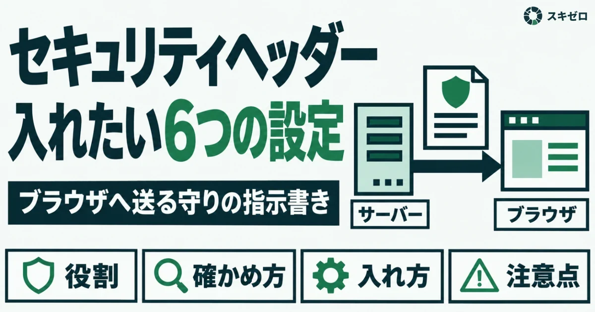
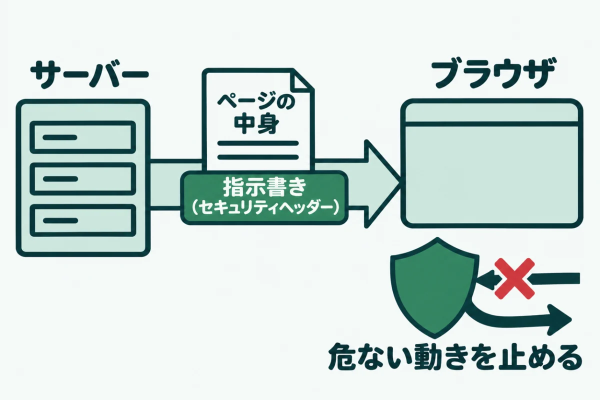
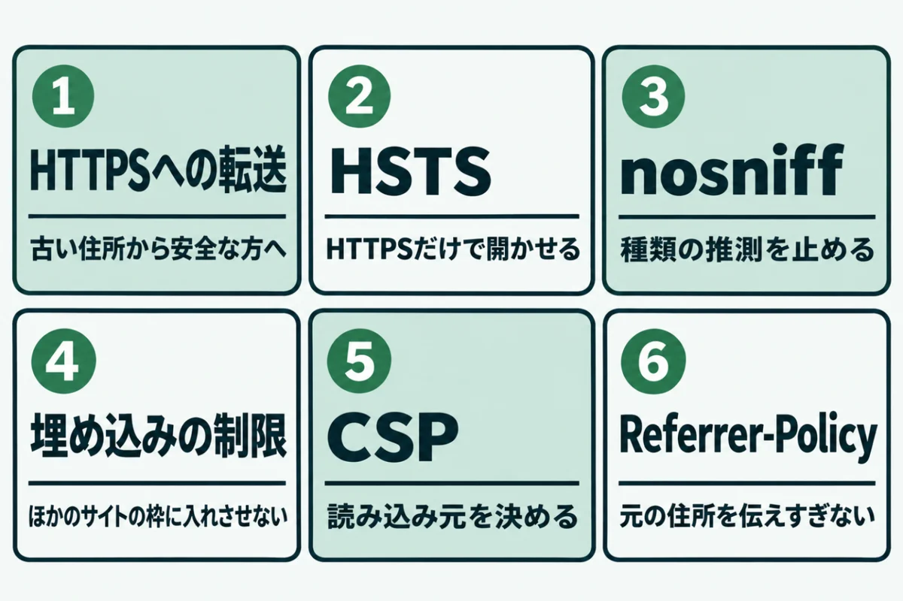
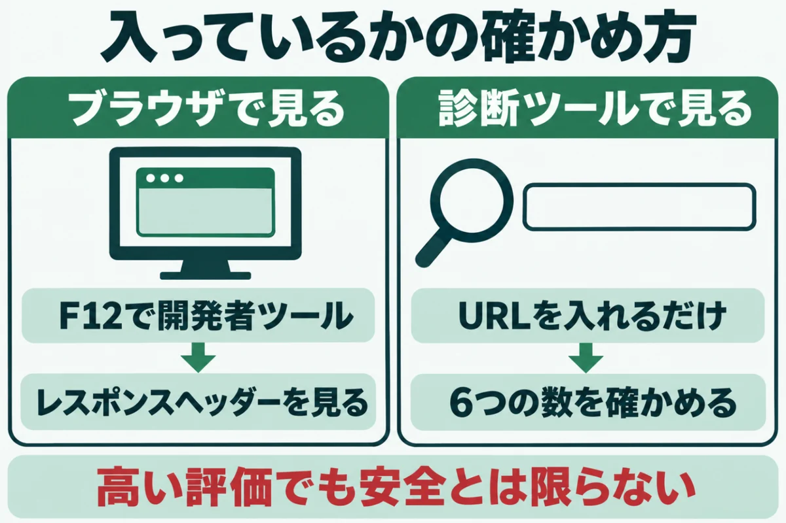
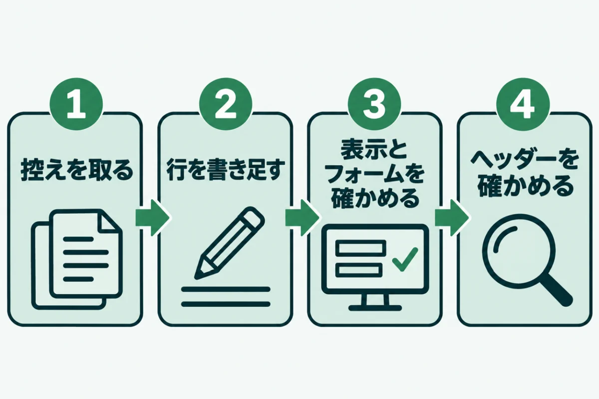
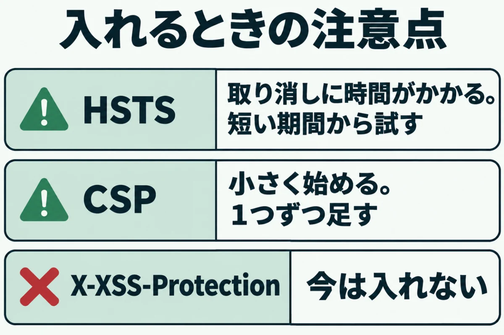

セキュリティヘッダーとは？ホームページに入れたい6つの設定確かめ方と入れるときの注意

「診断でセキュリティヘッダーが足りないと出たけれど、何のことか分からない」と戸惑っていませんか？
セキュリティヘッダーは、ホームページを開いたときにサーバーがブラウザへ送る短い指示書きです。入っていなくても見た目は変わらないので、抜けていても気づきにくいのが難しいところでしょう。
この記事では、ホームページに入れたい6つの設定の役割を、専門用語をできるだけ避けて紹介します。入っているかの確かめ方と、入れるときの注意点もまとめました。
MDNやOWASP、IPAの公開情報と、運営者が自社サイトで確かめた結果をもとに書いています。制作会社に相談する前の下調べに使ってください。
セキュリティヘッダーとは？ホームページを守る仕組み

セキュリティヘッダーは、ブラウザに守り方を伝えるための設定です。サーバーの側で一度入れておけば、訪れた人のブラウザがその指示に従って動きます。
ページの文章や画像を直す作業とは別の場所にある設定です。そのため、ホームページを作ったときに入れていないと、何年もそのままになりやすい傾向があります。まずは、どんな仕組みで働くのかを押さえておきましょう。
ブラウザへの指示書きとして働く
ホームページを開くと、サーバーはページの中身の前に、いくつかの情報をブラウザへ送ります。この部分をHTTPヘッダーと呼び、その中で守りに関わるものがセキュリティヘッダーです。たとえば「このページをほかのサイトに埋め込ませない」といった指示を書けます。ブラウザは指示を読んで、危ない動きを先回りして止めてくれるのです。訪れた人が何かを操作したり、設定を変えたりする必要はありません。サイトの側で入れるだけで、すべての訪問者に効きます。
入っていなくても表示は変わらない
セキュリティヘッダーが1つも入っていなくても、ページはふだんどおりに表示されます。エラーも警告も出ないので、運営する側はまず気づきません。運営者は11月に、自社のWordPressサイトを外から確かめました。手を入れていないサイトは1つも返していない状態でした。一方、点検で手を入れた2つのサイトは、6種類のヘッダーを返しています。見た目では判断できない以上、外から確かめる手段を持っておくことが大切です。確かめ方は、このあとの章で紹介します。
ホームページに入れたいセキュリティヘッダー6つ

ホームページに入れたいセキュリティヘッダーは、まず次の6つを目安にすると分かりやすくなります。スキゼロの無料簡易診断でも、この6つが返っているかを見る形です。
厳密には、1つ目のHTTPSへの転送はヘッダーそのものではありません。ただ、2つ目のHSTSと組みになって働くので、あわせて確かめておくと安心です。どれも、OWASPやMDNが設定を勧めている項目になります。
① HTTPからHTTPSへの転送
「http://」で始まる住所で開かれたとき、自動で「https://」のページへ移す設定です。転送がないと、暗号化されていない古い住所のまま閲覧されることがあります。入力した内容が途中で読み取られるおそれもあるでしょう。古いブックマークや名刺の住所から来た人も、この転送があれば、安全な方へ自動で案内できます。警告の表示とも関わりがあり、「保護されていない通信」と表示される原因と直し方で詳しく紹介しました。
② HSTS（Strict-Transport-Security）
HSTSは、「このサイトは今後もHTTPSだけで開く」とブラウザに覚えさせるヘッダーです。覚えておく期間はmax-ageに秒で書き、1年なら31536000になります。MDNによると、HSTSは一度HTTPSで開いたあとから効く仕組みです。初めての訪問まで守るには、ブラウザに組み込まれる一覧への登録が欠かせません。登録の条件は、期間を1年以上にすることや、サブドメインにも効かせることなど、いくつか決まっています。
③ X-Content-Type-Options
X-Content-Type-Optionsは、ファイルの種類の推測を止めるヘッダーです。値は「nosniff」の1つだけなので、迷う場面はほとんどありません。推測で、本来は実行しないファイルが実行できる扱いに変わるのを防ぐとOWASPは説明しています。入れても見た目が変わることはまずないので、真っ先に入れたい設定です。6つの中では最も手軽な設定で、入れたことによる困りごとも、まず起きないでしょう。
④ X-Frame-Options（埋め込みの制限）
X-Frame-Optionsは、自分のページをほかのサイトの枠の中に表示させない設定です。透明な枠でボタンを重ね、知らないうちに操作させる手口を防ぎます。IPAはこの手口をクリックジャッキングと呼び、根本的な対策にこのヘッダーを挙げました。値はDENYかSAMEORIGINのどちらかを選ぶ形です。自分のサイト内で枠を使う場合は、SAMEORIGINにしておきましょう。使わないならDENYで十分です。
⑤ CSP（Content-Security-Policy）
CSPは、ページが読み込んでよいプログラムや画像の出どころを決めるヘッダーです。うまく使えば、改ざんで差し込まれた外部のプログラムを動かしにくくできます。一方で、OWASPは設定が複雑だとして、別に詳しい解説を設けているほどです。最初は埋め込みの制限だけを書くなど、小さく始めると失敗しにくくなります。埋め込みの制限は、frame-ancestorsという項目で書けるのが便利な点です。X-Frame-Optionsと並べて書くのが一般的でしょう。
⑥ Referrer-Policy
Referrer-Policyは、ほかのサイトへ移るときに、元の住所をどこまで伝えるかを決めます。住所に問い合わせ番号などが含まれていると、移動先にその情報まで伝わる場合があるのです。OWASPが勧める値は「strict-origin-when-cross-origin」になります。ほかのサイトにはドメインだけを伝える設定です。今のブラウザは、指定がないときもこの値で動きます。古いブラウザに備える意味で、はっきり書いておくとよいでしょう。
- 参考：HTTP Headers｜OWASP Cheat Sheet Series
- 参考：Strict-Transport-Security header｜MDN
- 参考：Referrer-Policy header｜MDN
- 参考：安全なウェブサイトの作り方 - 1.9 クリックジャッキング｜IPA
セキュリティヘッダーが入っているかを確かめる方法

セキュリティヘッダーが入っているかは、ホームページの外から誰でも確かめられます。管理画面に入る必要はないため、制作会社に任せているサイトでも調べられるのが利点です。
やり方は大きく分けて2通りあります。パソコンのブラウザで直接見る方法と、URLを入れるだけの診断ツールを使う方法です。手軽なのは後者なので、まずは診断ツールで全体を見てから細かく調べると迷いません。
ブラウザの開発者ツールで見る
パソコンのChromeなら、ページを開いて「F12」キーを押すと開発者ツールが開きます。「ネットワーク」のタブを選んでページを読み込み直し、一番上の行を選んでください。「レスポンスヘッダー」の欄に、サーバーが返したヘッダーが並ぶはずです。6つの名前がこの欄にあるかを1つずつ見ていけば、抜けている設定が分かります。少し手間はかかるものの、道具を入れずに済む方法です。httpの住所で開いて、httpsへ移るかも見ておきましょう。
無料の診断ツールを使う
MDNは、ヘッダーの設定を点数にして示すHTTP Observatoryを無料で公開しています。誰でもどのサイトでも調べられ、調べた履歴は公開されるという説明です。MDNも、高い評価でもサイトが安全とは限らないと書いている点に注意してください。スキゼロの無料簡易診断では、6つのうちいくつ返っているかを判定しています。PHPの版など、ほかの7項目も同時に見る仕組みです。診断の種類はホームページのセキュリティ診断とは？無料と有料の違いと選び方にまとめました。
セキュリティヘッダーの入れ方と制作会社への頼み方

セキュリティヘッダーは、多くの場合サーバーの設定ファイルに数行を書き足すだけで入ります。ただ、書き方を誤るとページが開かなくなることもあるので、手順を守って進めましょう。
自分で入れる場合と、制作会社に頼む場合に分けて紹介します。サーバーの設定ファイルを触ったことがなければ、無理をせず頼む方を選んでください。頼むときに伝える内容が決まっていれば、話は早く進みます。
.htaccessに書き足す
Apacheで動くサーバーでは、.htaccessというファイルにヘッダーの行を書けます。MDNの例は、「Header always set」に続けて名前と値を書く形です。行は「IfModule mod_headers.c」の囲みの中に入れておきます。こうすると、使えない環境では読み飛ばされるのです。書き換える前に元のファイルを必ず控え、表示がおかしければすぐ戻してください。.htaccessが使えるかどうかは、サーバー会社のマニュアルで先に確かめておきましょう。
制作会社に頼むときの伝え方
制作会社に頼むときは、入れてほしいヘッダーの名前を並べて伝えると話が早く進みます。「HSTS、nosniff、埋め込みの制限、リファラーの制限を入れてほしい」と書けば十分です。CSPは影響が大きいので、埋め込みの制限だけから始めたいと添えておくと安心でしょう。入れたあとに、診断ツールで返っているかを一緒に確かめてもらうと確実です。保守契約に含まれるか、別料金になるかも、あわせて聞いておきましょう。
セキュリティヘッダーを入れるときの注意点

セキュリティヘッダーは入れれば終わりではなく、入れ方を誤ると困る設定もあります。特に、一度入れると簡単には取り消せないものがあるので注意が必要です。
運営者の自社サイトで入れたときに気をつけた点を、3つにまとめました。どれも、入れる前に知っておけば避けられることです。制作会社に頼む場合も、この3つは共有しておくと行き違いが減ります。
HSTSは取り消しに時間がかかる
HSTSを入れると、訪れた人のブラウザは決めた期間だけHTTPSでしか開かなくなります。MDNも、.htaccessの解説で取り消しがきかない設定だと注意しているほどです。証明書が切れると、その間は開けなくなるおそれがあります。最初は短い期間で試し、問題がないのを確かめてから1年に延ばすと安心できるでしょう。証明書の自動更新が動いているかも、先に確かめてください。更新の確かめ方は、次の記事で紹介しています。SSL証明書の期限切れを防ぐ方法と確認のしかた｜有効期間は47日へ短くなるを参考にしてください。
CSPは小さく始める
CSPで読み込み元を細かく決めると、許していない地図や動画が止まることがあります。アクセス解析のタグが動かなくなる場合もあるでしょう。運営者の自社サイトでは、まず埋め込みの制限を書きました。あわせて、HTTPの読み込みをHTTPSに切り替える指定だけを入れています。表示に影響しにくい項目から始めたので、困る場面はこれまで出ていません。広げるときは1つずつ足し、そのたびに主なページを開いて確かめましょう。
古いX-XSS-Protectionは入れない
昔の解説記事では、X-XSS-Protectionを入れるよう勧めている例が見られます。しかしOWASPは今、このヘッダーを設定しないか、明示的に止めるよう勧めているのです。MDNのHTTP Observatoryも、2024年の見直しでこの項目の検査をやめました。代わりにCSPで守る考え方へ移ってきています。古い記事の設定例をそのまま写さず、新しい情報で確かめてから入れてください。迷ったら入れないのが今の考え方です。
URLを入れるだけで、6つの設定のうちいくつ返っているかを、PHPの版など8項目と一緒に無料で判定します。登録はいりません。
無料で診断するセキュリティヘッダーに関するよくある質問
セキュリティヘッダーを入れると、サイトが遅くなりますか？
ヘッダーは数行の文字なので、表示の速さにはほとんど影響しません。ただし、MDNは.htaccessを使うとサーバーの処理が遅くなるとも書いています。サーバー本体の設定を触れる場合は、そちらに書くのが望ましいとされる方法です。レンタルサーバーでは.htaccessに書くのが一般的なので、気にしすぎる必要はありません。
WordPressのサイトでも入れられますか？
WordPressでも、サーバーの.htaccessに書けばほかのサイトと同じように入ります。WordPressが自動で書き込む部分の外に足すのがよいでしょう。その部分は「BEGIN WordPress」の行から始まります。終わりは「END WordPress」の行なので、その外側に書き足してください。プラグインで入れる方法もありますが、何を入れたかを控えておくと後で困りません。
6つ全部入れないと危ないのですか？
1つ抜けているだけで、すぐに被害が出るわけではありません。ヘッダーは、ほかの対策をすり抜けたときに被害を小さくする、二重の守りのような役割です。PHPやWordPressの更新など、元になる弱点をふさぐ対策の方を先に済ませてください。そのうえで、入れやすいnosniffや埋め込みの制限から足していくのが現実的です。
スマホから見る人にも効きますか？
スマホのブラウザも、パソコンと同じようにヘッダーの指示に従います。サーバーの側で一度入れておけば、見る人の機器を問わず働くのが利点です。古いブラウザでは対応していない項目もあるので、両方の書き方を入れる例もあります。X-Frame-Optionsとframe-ancestorsを並べるのが一例です。
入れたあと、何をすればいいですか？
入れた直後に、主なページの表示とお問い合わせフォームの送信を確かめてください。そのあと診断ツールで、6つが返っているかを見ておくと安心です。サーバーの引っ越しや設定ファイルの入れ替えで、ヘッダーが消えることもあります。定期的な点検の項目に入れておき、年に数回は確かめる習慣をつけましょう。点検のついでに、PHPやWordPressの版も見ておくと手間が省けます。
まとめ
セキュリティヘッダーは、サーバーからブラウザへ送る守りの指示書きです。入っていなくても見た目は変わらないので、外から確かめないと抜けに気づけません。
目安は、HTTPSへの転送とHSTS、nosniff、埋め込みの制限の4つです。これにCSPとReferrer-Policyを加えた6つを確かめてください。HSTSとCSPは慎重に、控えを取ってから小さく始めることをおすすめします。
まずは、今の状態を知るところから。
URLを入れるだけで、数十秒で判定が出ます。登録はいりません。